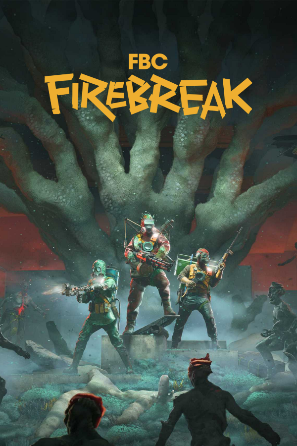

FBC: Firebreak
Every archived year-end list appearance, including placement and points earned.
About the Game
FBC: Firebreak is a cooperative first-person shooter set within a mysterious federal agency under assault by otherworldly forces. As a years-long siege on the agency’s headquarters reaches its boiling point, only Firebreak— the Bureau’s most versatile unit—has the gear and the guts to plunge into the building’s strangest crises, restore order, contain the chaos, and fight to reclaim control.Dive into the Federal Bureau of Control’s (FBC) unpredictable and extradimensional headquarters during its darkest—and strangest—hours. As one of the FBC’s fearless first responders, you and your team are on call to confront everything from reality-warping anomalies to otherworldly monsters... no matter the odds. Will you contain the chaos or finally lose control? Join forces with friends or strangers to tackle each job as a well-oiled crew. Survival in this three-player cooperative FPS hinges on quick thinking and seamless teamwork as you scramble to tame raging paranatural crises across a variety of unexpected locations. Improve your odds by utilizing the tools and skills that make you unique or improvising with whatever’s on hand to support your crew. Before deploying, select your weapon and customize your Firebreaker’s Crisis Kit with specialized tools, grenades, support items, and paranatural augments... then modify them to suit your strategy and change the way you play. Experiment with different loadouts to perfect your playstyle and synergize with your team, giving you the edge to succeed in every job, no matter the difficulty. Return to the strange and unexpected world of Control or venture in for the first time in this standalone, multiplayer experience. Discover the iconic and unfathomable headquarters of the FBC — the Oldest House — from an entirely new perspective as a team of volunteer first responders with nothing but gear and guts to bring the Bureau back from the brink.
| Released | 2025-06-17 |
|---|---|
| Developer | Remedy Entertainment |
| Publisher | Remedy Entertainment |
| Genres | Action, Shooter |
| Platforms | Xbox Series S/X, PC, PlayStation 5 |
Steam AchievementsMultiplayerFull controller supportAtmosphericCo-opcooperativeFirst-PersonSci-fiHorrorFPSOnline Co-OpFunny
Where to Buy
Game information provided by RAWG.
Points by Year
List History
| Year | Source | List | Placement | Points |
|---|---|---|---|---|
| 2025 | GameSpot | The Best Games Of 2025 | Unranked | 1 |